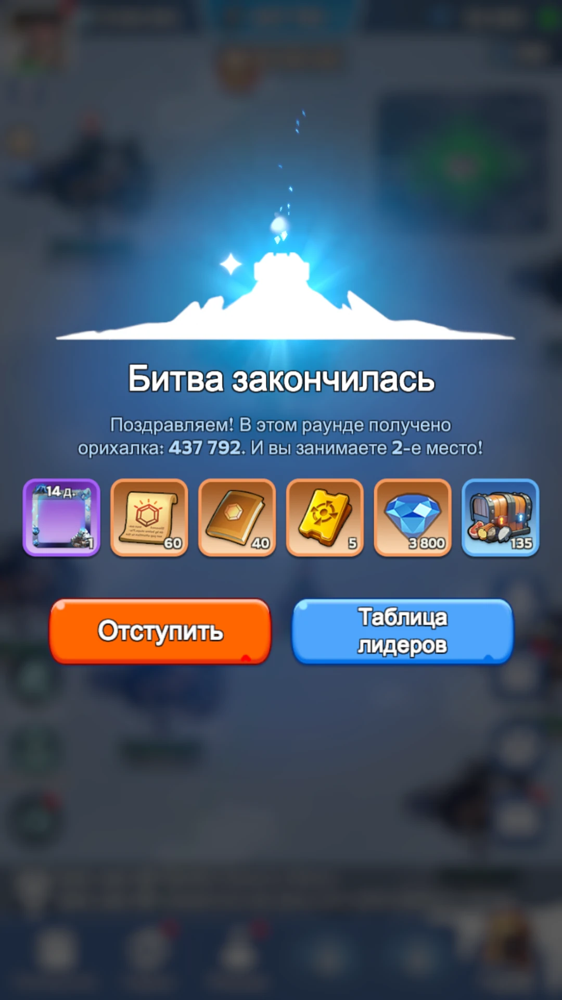
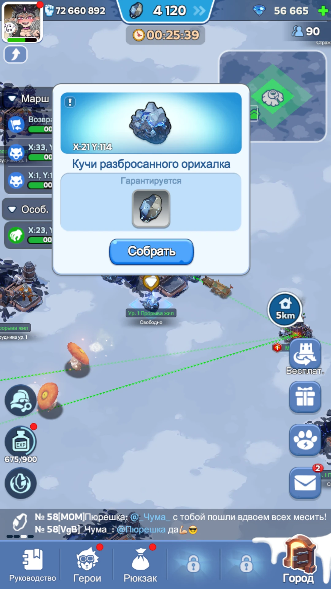
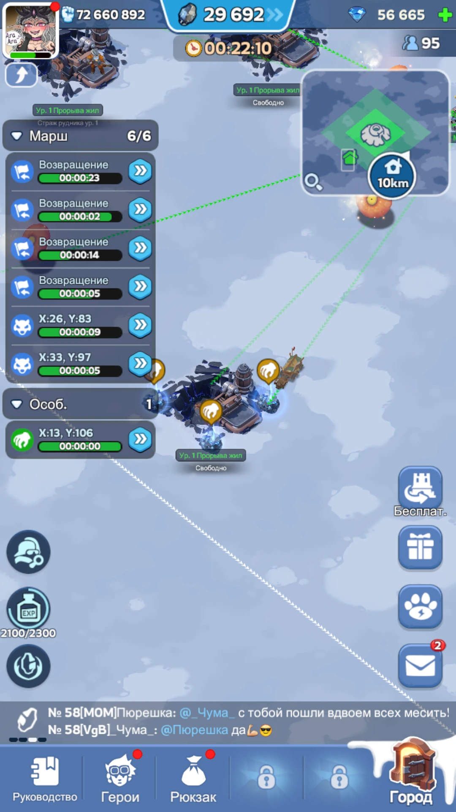
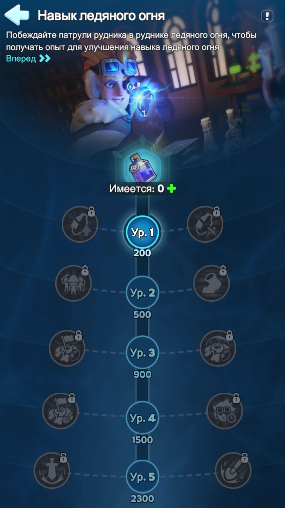
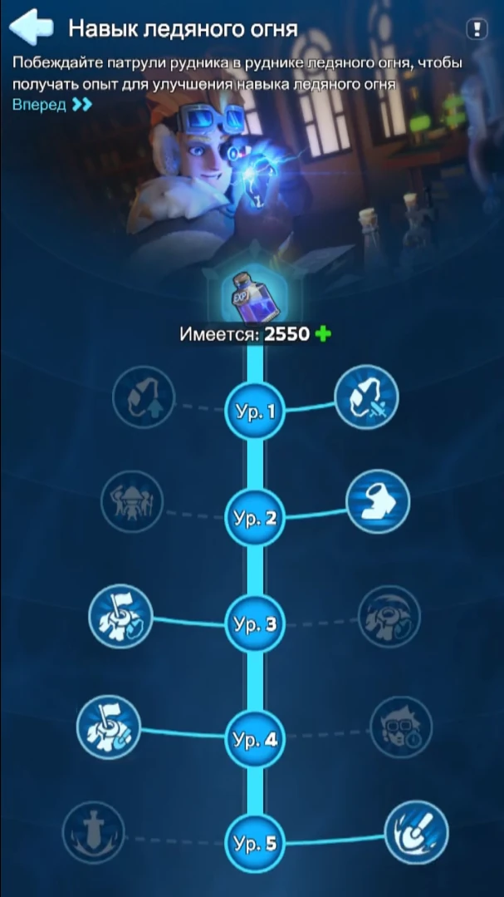
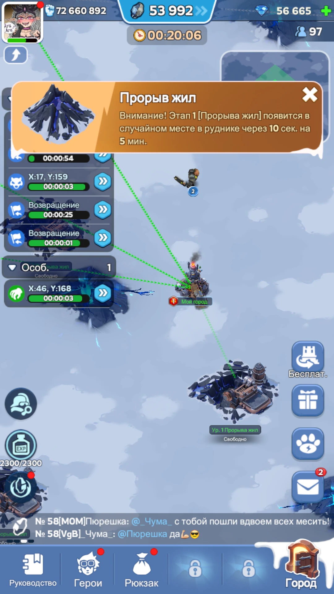

Патрули, ежеминутный вход в жилу после третьего левого навыка, россыпи орихалка и максимальная работа на Прорывах жил. Центр для этого не обязателен.
Если вас почти не выбивают из жил III уровня, выгодно превратить силу аккаунта в постоянную добычу несколькими маршами и отдельно бороться за Плавильню.

1. Что именно приносит орихалк
Кроме самих жил, на карте появляются россыпи орихалка. Они не требуют долгой добычи, поэтому их стоит подбирать по пути между патрулями, жилами и Прорывами.


2. Навыки Ледяного Огня
На открытие всех пяти уровней нужно суммарно 5 400 опыта Ледяного Огня. Сбросить выбранные навыки в ходе матча нельзя.


| Ур. / XP | Левая ветка | Правая ветка |
|---|---|---|
| 1 / 200 | +1 080 орихалка каждую минуту. | +1 500 орихалка за каждого побеждённого патрульного. |
| 2 / 500 | +12 000 войск во вместимость одного марша. | +25% скорости марша внутри Рудника. |
| 3 / 900 | +5 000 за успешное занятие обычной жилы; не чаще раза в 60 сек. | +5 000 при неудачной попытке занять обычную жилу; не чаще раза в 60 сек. |
| 4 / 1 500 | +15% эффективности добычи при занятии жил. | −30% времени восстановления героев после поражения. |
| 5 / 2 300 | Активный: +66% урона отправленных войск на 60 сек; откат 5 мин. | Активный: +50% скорости добычи отправленных войск на 60 сек; откат 5 мин. |
Темп и Прорывы
П → П → Л → Л → ППервые два правых ускоряют фарм патрулей и перемещения. Затем берём +5 000 за успешный вход в жилу, усиление добычи и активный бонус скорости сбора.
Постоянное удержание жил
Л → Л → Л → Л → ПВетка рассчитана на ситуацию, когда вы способны почти без помех удерживать несколько жил III уровня и постоянно добывать ими.
3. Стратегия для большинства игроков
В начале опыт важнее долгого стояния в обычной жиле. Наша задача — быстрее открыть ключевые уровни дерева.
Один марш раз в 60 секунд входит в обычную жилу ради +5 000 и сразу возвращается к патрулям или другим целям.
Не нажимайте ускорение добычи просто по откату. Максимальная отдача обычно получается во время волн вулканов.
4. Прорывы жил и телепорты

Три последовательные волны по обратному таймеру события.
Ещё три волны. К этому моменту особенно важно не тратить телепорт без причины.
Сначала выедаем все доступные вулканы вокруг текущей позиции. Когда локальная зона почти пустая, перелетаем туда, где на карте видно большое скопление ещё не тронутых Прорывов. Обычно на третьей волне такой перелёт даёт больше, чем ранний телепорт в первой или второй.
5. Стратегия для сильных аккаунтов
Эта схема имеет смысл не потому, что игрок донатит, а потому что конкретное лобби почти не может выбивать его из жил III уровня. Если вас регулярно выгоняют, мобильная стратегия выше обычно выгоднее.
Сначала всё равно фармим патрули
До открытия всех пяти навыков нужен быстрый опыт. После этого телепортируемся к центру и рассаживаем марши по ближайшим жилам III уровня.
Не дёргаем всю рассадку ради каждого вулкана
Пять маршей стабильно добывают в III жилах. Основной марш делает минутные перезаходы, забирает ближайшие россыпи и свободные вулканы.
| Показатель | Значение |
|---|---|
| Базовая III жила | 32/с |
| С IV левым навыком (+15%) | 36,8/с |
| С V правым (+50%) | ≈52,8/с → интерфейс около 53/с |
| Один марш при 53/с | ≈3 180/мин |
| Пять маршей | ≈15 900/мин |
| Плюс I левый навык | +1 080/мин пассивно |
6. Плавильня
Плавильня открывается на последние 7 минут и даёт дополнительный орихалк по месту в рейтинге суммарного времени удержания.
| Место | Бонус | Место | Бонус |
|---|---|---|---|
| 1 | 100 000 | 6 | 40 000 |
| 2 | 80 000 | 7 | 35 000 |
| 3 | 60 000 | 8 | 30 000 |
| 4 | 55 000 | 9 | 25 000 |
| 5 | 50 000 | 10 | 20 000 |
Если вы реально можете удерживать центр
Основной марш летит в Плавильню сразу после открытия. Несколько секунд на первом входе могут решить итоговое место по времени удержания.
Ориентир — около четырёх минут
Четыре минуты — больше половины семиминутного окна. Если удержали их непрерывно, на остальных игроков остаётся максимум три минуты суммарно, и ваш результат уже нельзя обойти по времени.